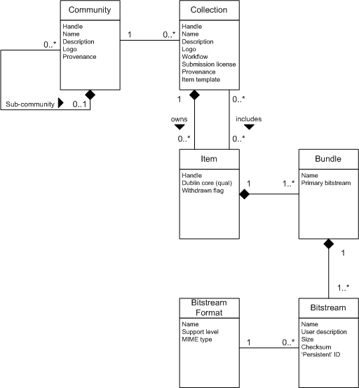
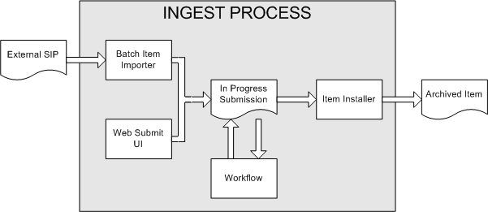
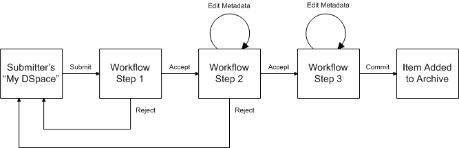

The following sections describe the various functional aspects of the DSpace system.

Data Model Diagram
The way data is organized in DSpace is intended to reflect the structure of the organization using the DSpace system. Each DSpace site is divided into communities; these typically correspond to a laboratory, research center or department. As of DSpace version 1.2, these communities can be organized into an hierarchy.
Communities contain collections, which are groupings of related content. A collection may appear in more than one community.
Each collection is composed of items, which are the basic archival elements of the archive. Each item is owned by one collection. Additionally, an item may appear in additional collections; however every item has one and only one owning collection.
Items are further subdivided into named bundles of bitstreams. Bitstreams are, as the name suggests, streams of bits, usually ordinary computer files. Bitstreams that are somehow closely related, for example HTML files and images that compose a single HTML document, are organised into bundles.
In practice, most items tend to have three named bundles:
Each bitstream is associated with one Bitstream Format. Because preservation services may be an important aspect of the DSpace service, it is important to capture the specific formats of files that users submit. In DSpace, a bitstream format is a unique and consistent way to refer to a particular file format. An integral part of a bitstream format is an either implicit or explicit notion of how material in that format can be interpreted. For example, the interpretation for bitstreams encoded in the JPEG standard for still image compression is defined explicitly in the Standard ISO/IEC 10918-1. The interpretation of bitstreams in Microsoft Word 2000 format is defined implicitly, through reference to the Microsoft Word 2000 application. Bitstream formats can be more specific than MIME types or file suffixes. For example, application/ms-word and .doc span multiple versions of the Microsoft Word application, each of which produces bitstreams with presumably different characteristics.
Each bitstream format additionally has a support level, indicating how well the hosting institution is likely to be able to preserve content in the format in the future. There are three possible support levels that bitstream formats may be assigned by the hosting institution. The host institution should determine the exact meaning of each support level, after careful consideration of costs and requirements. MIT Libraries' interpretation is shown below:
| Supported | The format is recognized, and the hosting institution is confident it can make bitstreams of this format useable in the future, using whatever combination of techniques (such as migration, emulation, etc.) is appropriate given the context of need. |
| Known | The format is recognized, and the hosting institution will promise to preserve the bitstream as-is, and allow it to be retrieved. The hosting institution will attempt to obtain enough information to enable the format to be upgraded to the 'supported' level. |
| Unsupported | The format is unrecognized, but the hosting institution will undertake to preserve the bitstream as-is and allow it to be retrieved. |
Each item has one qualified Dublin Core metadata record. Other metadata might be stored in an item as a serialized bitstream, but we store Dublin Core for every item for interoperability and ease of discovery. The Dublin Core may be entered by end-users as they submit content, or it might be derived from other metadata as part of an ingest process.
Items can be removed from DSpace in one of two ways: They may be 'withdrawn', which means they remain in the archive but are completely hidden from view. In this case, if an end-user attempts to access the withdrawn item, they are presented with a 'tombstone,' that indicates the item has been removed. For whatever reason, an item may also be 'expunged' if necessary, in which case all traces of it are removed from the archive.
| Object | Example |
|---|---|
| Community | Laboratory of Computer Science; Oceanographic Research Center |
| Collection | LCS Technical Reports; ORC Statistical Data Sets |
| Item | A technical report; a data set with accompanying description; a video recording of a lecture |
| Bundle | A group of HTML and image bitstreams making up an HTML document |
| Bitstream | A single HTML file; a single image file; a source code file |
| Bitstream Format | Microsoft Word version 6.0; JPEG encoded image format |
Broadly speaking, DSpace holds three sorts of metadata about archived content:
Each Item has one qualified Dublin Core metadata record. The set of elements and qualifiers used by MIT Libraries is the default configuration included in the DSpace source code. These are loosely based on the Library Application Profile set of elements and qualifiers, though there are some differences.
Other descriptive metadata about items may be held in serialized bitstreams. Communities and collections have some simple descriptive metadata (a name, and some descriptive prose), held in the DBMS.
This includes preservation metadata, provenance and authorization policy data. Most of this is held within DSpace's relation DBMS schema. Provenance metadata (prose) is stored in Dublin Core records. Additionally, some other administrative metadata (for example, bitstream byte sizes and MIME types) is replicated in Dublin Core records so that it is easily accessible outside of DSpace.
This includes information about how to present an item, or bitstreams within an item, to an end-user, and the relationships between constituent parts of the item. As an example, consider a thesis consisting of a number of TIFF images, each depicting a single page of the thesis. Structural metadata would include the fact that each image is a single page, and the ordering of the TIFF images/pages. Structural metadata in DSpace is currently fairly basic; within an item, bitstreams can be arranged into separate bundles as described above. A bundle may also optionally have a primary bitstream. This is currently used by the HTML support to indicate which bitstream in the bundle is the first HTML file to send to a browser.
In addition to some basic technical metadata, bitstreams also have a 'sequence ID' that uniquely identifies it within an item. This is used to produce a 'persistent' bitstream identifier for each bitstream.
Additional structural metadata can be stored in serialized bitstreams, but DSpace does not currently understand this natively.
Many of DSpace's features such as document discovery and retrieval can be used anonymously, but users must be authenticated to perform functions such as submission, email notification ('subscriptions') or administration. Users are also grouped for easier administration. DSpace calls users e-people, to reflect that some users may be machines rather than actual people.
DSpace hold the following information about each e-person:
E-people authenticate with username/password pairs or X509 certificates. E-people can be members of 'groups' to make administrator's lives easier when manipulating authorization policies.
DSpace's authorization system is based on associating actions with objects and the lists of EPeople who can perform them. The associations are called Resource Policies, and the lists of EPeople are called Groups. There are two special groups: 'administrators', who can do anything in a site, and 'anonymous', which is a list that contains all users. Assigning a policy for an action on an object to anonymous means giving everyone permission to do that action. (For example, most objects in DSpace sites have a policy of 'anonymous' READ.) Permissions must be explicit - lack of an explicit permission results in the default policy of 'deny'. Permissions also do not 'commute'; for example, if an e-person has READ permission on an item, they might not necessarily have READ permission on the bundles and bitstreams in that item. Currently Collections, Communities and Items are discoverable in the browse and search systems regardless of READ authorization.
The following actions are possible:
Community
| ADD/REMOVE | add or remove collections or sub-communities |
Collection
| ADD/REMOVE | add or remove items (ADD = permission to submit items) |
| DEFAULT_ITEM_READ | inherited as READ by all submitted items |
| DEFAULT_BITSTREAM_READ | inherited as READ by bitstreams of all submitted items |
| COLLECTION_ADMIN | collection admins can edit items in a collection, withdraw items, map other items into this collection. |
Item
| ADD/REMOVE | add or remove bundles |
| READ | can view item (item metadata is always viewable) |
| WRITE | can modify item |
Bundle
| ADD/REMOVE | add or remove bitstreams to a bundle |
Bitstream
| READ | view bitstream |
| WRITE | modify bitstream |
Note that there is no 'DELETE' action. In order to 'delete' an object (e.g. an item) from the archive, one must have REMOVE permission on all objects (in this case, collection) that contain it. The 'orphaned' item is automatically deleted.
Policies can apply to individual e-people or groups of e-people.
Rather than being a single subsystem, ingesting is a process that spans several. Below is a simple illustration of the current ingesting process in DSpace.

DSpace Ingest Process
The batch item importer is an application, which turns an external SIP (an XML metadata document with some content files) into an "in progress submission" object. The Web submission UI is similarly used by an end-user to assemble an "in progress submission" object.
Depending on the policy of the collection to which the submission in targeted, a workflow process may be started. This typically allows one or more human reviewers or 'gatekeepers' to check over the submission and ensure it is suitable for inclusion in the collection.
When the Batch Ingester or Web Submit UI completes the InProgressSubmission object, and invokes the next stage of ingest (be that workflow or item installation), a provenance message is added to the Dublin Core which includes the filenames and checksums of the content of the submission. Likewise, each time a workflow changes state (e.g. a reviewer accepts the submission), a similar provenance statement is added. This allows us to track how the item has changed since a user submitted it. (The History system is also invoked, but provenance is easier for us to access at the moment.)
Once any workflow process is successfully and positively completed, the InProgressSubmission object is consumed by an "item installer", that converts the InProgressSubmission into a fully blown archived item in DSpace. The item installer:
A collection's workflow can have up to three steps. Each collection may have an associated e-person group for performing each step; if no group is associated with a certain step, that step is skipped. If a collection has no e-person groups associated with any step, submissions to that collection are installed straight into the main archive.
In other words, the sequence is this: The collection receives a submission. If the collection has a group assigned for workflow step 1, that step is invoked, and the group is notified. Otherwise, workflow step 1 is skipped. Likewise, workflow steps 2 and 3 are performed if and only if the collection has a group assigned to those steps.
When a step is invoked, the task of performing that workflow step put in the 'task pool' of the associated group. One member of that group takes the task from the pool, and it is then removed from the task pool, to avoid the situation where several people in the group may be performing the same task without realizing it.
The member of the group who has taken the task from the pool may then perform one of three actions:
| Workflow Step | Possible actions |
|---|---|
| 1 | Can accept submission for inclusion, or reject submission. |
| 2 | Can edit metadata provided by the user with the submission, but cannot change the submitted files. Can accept submission for inclusion, or reject submission. |
| 3 | Can edit metadata provided by the user with the submission, but cannot change the submitted files. Must then commit to archive; may not reject submission. |

Submission Workflow in DSpace
If a submission is rejected, the reason (entered by the workflow participant) is e-mailed to the submitter, and it is returned to the submitter's 'My DSpace' page. The submitter can then make any necessary modifications and re-submit, whereupon the process starts again.
If a submission is 'accepted', it is passed to the next step in the workflow. If there are no more workflow steps with associated groups, the submission is installed in the main archive.
One last possibility is that a workflow can be 'aborted' by a DSpace site administrator. This is accomplished using the administration UI.
The reason for this apparently arbitrary design is that is was the simplist case that covered the needs of the early adopter communities at MIT. The functionality of the workflow system will no doubt be extended in the future.
Researchers require a stable point of reference for their works. The simple evolution from sharing of citations to emailing of URLs broke when Web users learned that sites can disappear or be reconfigured without notice, and that their bookmark files containing critical links to research results couldn't be trusted long term. To help solve this problem, a core DSpace feature is the creation of persistent identifier for every item, collection and community stored in DSpace. To persist identifier, DSpace requires a storage- and location- independent mechanism for creating and maintaining identifiers. DSpace uses the CNRI Handle System for creating these identifiers. The rest of this section assumes a basic familiarity with the Handle system.
DSpace uses Handles primarily as a means of assigning globally unique identifiers to objects. Each site running DSpace needs to obtain a Handle 'prefix' from CNRI, so we know that if we create identifiers with that prefix, they won't clash with identifiers created elsewhere.
Presently, Handles are assigned to communities, collections, and items. Bundles and bitstreams are not assigned Handles, since over time, the way in which an item is encoded as bits may change, in order to allow access with future technologies and devices. Older versions may be moved to off-line storage as a new standard becomes de facto. Since it's usually the item that is being preserved, rather than the particular bit encoding, it only makes sense to persistently identify and allow access to the item, and allow users to access the appropriate bit encoding from there.
Of course, it may be that a particular bit encoding of a file is explicitly being preserved; in this case, the bitstream could be the only one in the item, and the item's Handle would then essentially refer just to that bitstream. The same bitstream can also be included in other items, and thus would be citable as part of a greater item, or individually.
The Handle system also features a global resolution infrastructure; that is, an end-user can enter a Handle into any service (e.g. Web page) that can resolve Handles, and the end-user will be directed to the object (in the case of DSpace, community, collection or item) identified by that Handle. In order to take advantage of this feature of the Handle system, a DSpace site must also run a 'Handle server' that can accept and resolve incoming resolution requests. All the code for this is included in the DSpace source code bundle.
Handles can be written in two forms:
hdl:1721.123/4567 http://hdl.handle.net/1721.123/4567
The above represent the same Handle. The first is possibly more convenient to use only as an identifier; however, by using the second form, any Web browser becomes capable of resolving Handles. An end-user need only access this form of the Handle as they would any other URL. It is possible to enable some browsers to resolve the first form of Handle as if they were standard URLs using CNRI's Handle Resolver plug-in, but since the first form can always be simply derived from the second, DSpace displays Handles in the second form, so that it is more useful for end-users.
It is important to note that DSpace uses the CNRI Handle infrastructure only at the 'site' level. For example, in the above example, the DSpace site has been assigned the prefix '1721.123'. It is still the responsibility of the DSpace site to maintain the association between a full Handle (including the '4567' local part) and the community, collection or item in question.
As of DSpace 1.2, bitstreams in DSpace also have more persistent identifiers. They are more volatile than Handles, since if the content is moved to a different server or organizaion, they will no longer work (hence the quotes around 'persistent'). However, they are more easily persisted than the simple URLs based on database primary key previously used. This means that external systems can more reliably refer to specific bitstreams stored in a DSpace instance.
Each bitstream has a sequence ID, unique within an item. This sequence ID is used to create a persistent ID, of the form:
dspace url/bitstream/handle/sequence ID/filename
For example:
https://dspace.myu.edu/bitstream/123.456/789/24/foo.html
The above refers to the bitstream with sequence ID 24 in the item with the Handle hdl:123.456/789. The foo.html is really just there as a hint to browsers: Although DSpace will provide the appropriate MIME type, some browsers only function correctly if the file has an expected extension.
DSpace allows end-users to discover content in a number of ways, including:
Search is an essential component of discovery in DSpace. Users' expectations from a search engine are quite high, so a goal for DSpace is to supply as many search features as possible. DSpace's indexing and search module has a very simple API which allows for indexing new content, regenerating the index, and performing searches on the entire corpus, a community, or collection. Behind the API is the Java freeware search engine Lucene. Lucene gives us fielded searching, stop word removal, stemming, and the ability to incrementally add new indexed content without regenerating the entire index.
Another important mechanism for discovery in DSpace is the browse. This is the process whereby the user views a particular index, such as the title index, and navigates around it in search of interesting items. The browse subsystem provides a simple API for achieving this by allowing a caller to specify an index, and a subsection of that index. The browse subsystem then discloses the portion of the index of interest. Indices that may be browsed are item title, item issue date and authors. Additionally, the browse can be limited to items within a particular collection or community.
For the most part, at present DSpace simply supports uploading and downloading of bitstreams as-is. This is fine for the majority of commonly-used file formats -- for example PDFs, Microsoft Word documents, spreadsheets and so forth. HTML documents (Web sites and Web pages) are far more complicated, and this has important ramifications when it comes to digital preservation:
Web pages tend to consist of several files -- one or more HTML files that contain references to each other, and stylesheets and image files that are referenced by the HTML files.
Web pages also link to or include content from other sites, often imperceptably to the end-user. Thus, in a few year's time, when someone views the preserved Web site, they will probably find that many links are now broken or refer to other sites than are now out of context.
In fact, it may be unclear to an end-user when they are viewing content stored in DSpace and when they are seeing content included from another site, or have navigated to a page that is not stored in DSpace. This problem can manifest when a submitter uploads some HTML content. For example, the HTML document may include an image from an external Web site, or even their local hard drive. When the submitter views the HTML in DSpace, their browser is able to use the reference in the HTML to retrieve the appropriate image, and so to the submitter, the whole HTML document appears to have been deposited correctly. However, later on, when another user tries to view that HTML, their browser might not be able to retrieve the included image since it may have been removed from the external server. Hence the HTML will seem broken.
Often Web pages are produced dynamically by software running on the Web server, and represent the state of a changing database underneath it.
Dealing with these issues is the topic of much active research. Currently, DSpace bites off a small, tractable chunk of this problem. DSpace can store and provide on-line browsing capability for self-contained, non-dynamic HTML documents. In practical terms, this means:
diagram.gif is OKimage/foo.gif is OK/stylesheet.css is not OKhttp://somedomain.com/content.html is not OKhttp://somedomain.com/content.html) are stored 'as is', and will continue to link to the external content (as opposed to relative links, which will link to the copy of the content stored in DSpace.) Thus, over time, the content refered to by the absolute link may change or disappear.The Open Archives Initiative has developed a protocol for metadata harvesting. This allows sites to programmatically retrieve or 'harvest' the metadata from several sources, and offer services using that metadata, such as indexing or linking services. Such a service could allow users to access information from a large number of sites from one place.
DSpace exposes the Dublin Core metadata for items that are publicly (anonymously) accessible. Additionally, the collection structure is also exposed via the OAI protocol's 'sets' mechanism. OCLC's open source OAICat framework is used to provide this functionality.
DSpace's OAI service does support the exposing of deletion information for withdrawn items, but not for items that are 'expunged' (see above). DSpace also supports OAI-PMH resumption tokens.
DSpace supports the OpenURL protocol from SFX, in a rather simple fashion. If your institution has an SFX server, DSpace will display an OpenURL link on every item page, automatically using the Dublin Core metadata. Additionally, DSpace can respond to incoming OpenURLs. Presently it simply passes the information in the OpenURL to the search subsystem. A list of results is then displayed, which usually gives the relevant item (if it is in DSpace) at the top of the list.
Dspace provides support for Creative Commons licenses to be attached to items in the repository. They represent an alternative to traditional copyright. To learn more about Creative Commons, visit their website. Support for the licenses is controlled by a site-wide configuration option, and since license selection involves redirection to the Creative Commons website, additional parameters may be configured to work with a proxy server. If the option is enabled, users may select a Creative Commons license during the submission process, or elect to skip Creative Commons licensing. If a selection is made a copy of the license text and RDF metadata is stored along with the item in the repository. There is also an indication - text and a Creative Commons icon - in the item display page of the web user interface when an item is licensed under Creative Commons.
As noted above, end-users (e-people) may 'subscribe' to collections in order to be alerted when new items appear in those collections. Each day, end-users who are subscribed to one or more collections will receive an e-mail giving brief details of all new items that appeared in any of those collections the previous day. If no new items appeared in any of the subscribed collections, no e-mail is sent. Users can unsubscribe themselves at any time.
While provenance information in the form of prose is very useful, it is not easily programmatically manipulated. The History system captures a time-based record of significant changes in DSpace, in a manner suitable for later 'refactoring' or repurposing.
Currently, the History subsystem is explicitly invoked when significant events occur (e.g., DSpace accepts an item into the archive). The History subsystem then creates RDF data describing the current state of the object. The RDF data is modeled using Harmony/ABC, an ontology for describing temporal-based data, and stored in the file system. Some simple indices for unwinding the data are available.
DSpace also includes batch tools to import and export items in a simple directory structure, where the Dublin Core metadata is stored in an XML file. This may be used as the basis for moving content between DSpace and other systems.
There is also a METS-based export tool, which exports items as METS-based metadata with associated bitstreams referenced from the METS file.